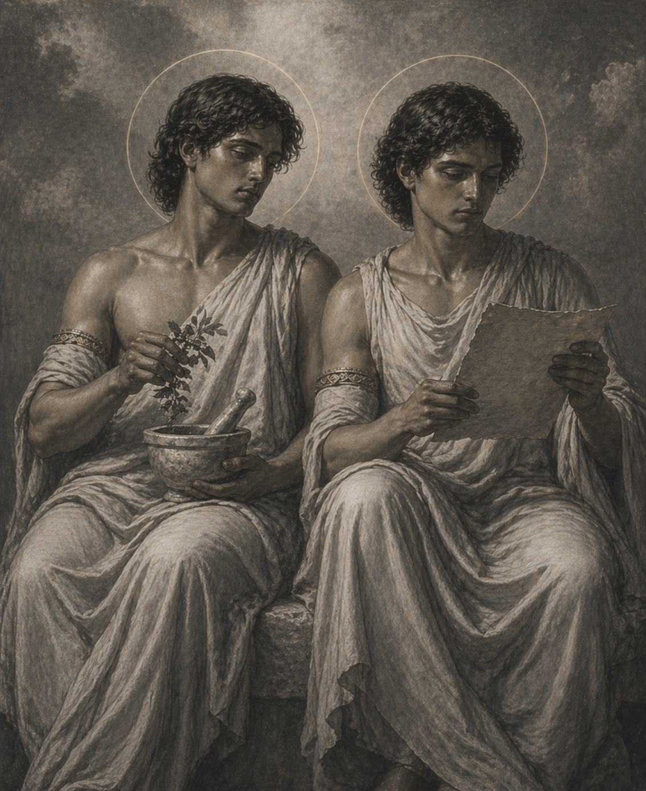

Sanctorum Archive
Archive of the Saints
Lives, Legends, and Hidden Wonders of the Saints

Saints Cosmas and Damian — twin physicians and martyrs, renowned for healing without payment and bearing witness through charity and sacrifice.


Archive of the Saints
Lives, Legends, and Hidden Wonders of the Saints

Saints Cosmas and Damian — twin physicians and martyrs, renowned for healing without payment and bearing witness through charity and sacrifice.